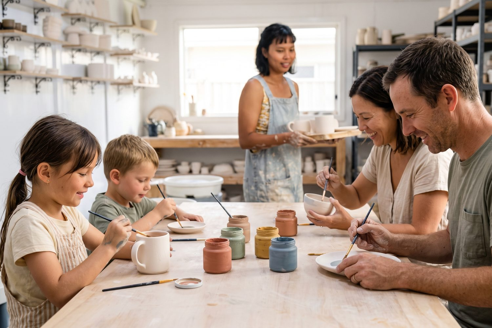
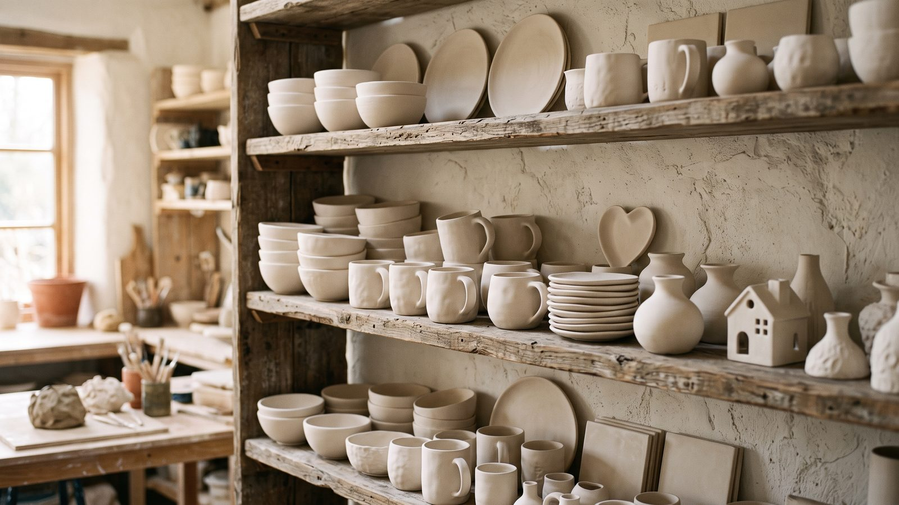
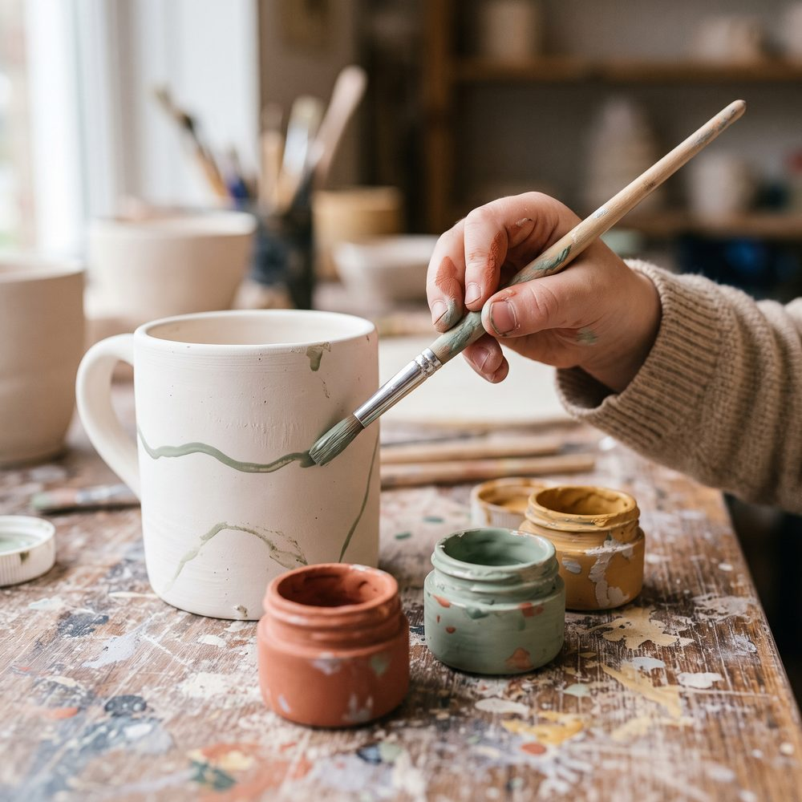
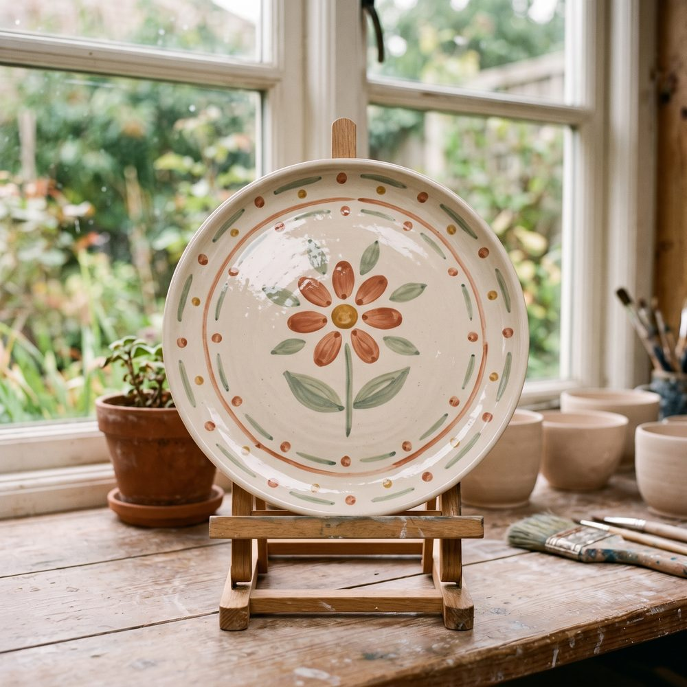

מה קורה בסדנה
כל אחד בוחר כלי מהמדף: ספל, צלחת או קערה. מקבלים צבעים ומכחולים, ומציירים מה שבא. אני לידכם עם רעיונות וטיפים לכל גיל, וגם בני 3 יוצאים עם משהו שהם גאים בו.



ציור על כלי קרמיקה · 180 ₪ למשתתף
בחירת מועד והרשמה
הסדנה במבט אחד
- מה כלול
- כלי לבחירה, צבעים, מכחולים וסינר
- למי מתאים
- משפחות עם ילדים קטנים, וכל מי שרוצה ליצור בנחת
- כמה זמן
- כשעתיים
- מאיזה גיל
- מגיל 3
01
02
03
04
שאלות על הסדנה
כן. הילדים הקטנים עובדים בקצב שלהם, ואני דואגת שיהיה להם מה לעשות לאורך כל הזמן.